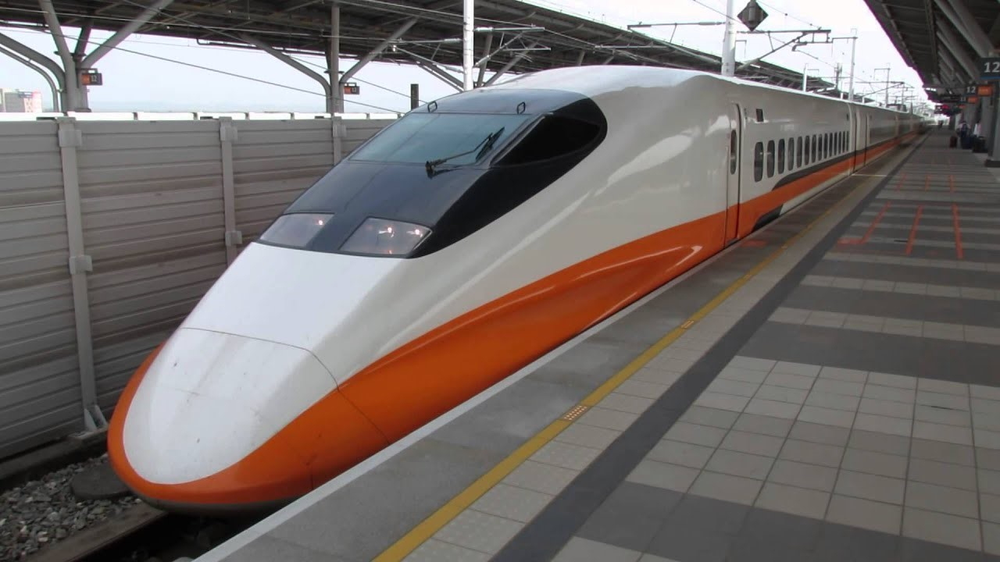

Thursday, December 3 |
||||||
|---|---|---|---|---|---|---|
| Time | Event | |||||
| 8:00-9:00 | Registration | |||||
| 9:10-10:10 | TAAI / ICPAI Welcome & Opening Remarks [live] | |||||
| 9:10-10:10 | Keynote Speech: Prof. Gil Alterovitz Massachusetts Institute of Technology (MIT) (Convention Hall) [live] | |||||
| 10:10-10:30 | Coffee Break | |||||
| 10:30-12:00 | Nectar Program I(Convention Hall) | International Track TAAI-A1 Natural Language Processing I (R101) [live] | Domestic Track TAAI-B1 Computer Vision (R201) | ICPAI Session 1 Smart energy (R202) [live] | ICPAI Session 2 Smart agriculture (R203) [live] | ICPAI Session 3 AI for communications and networks (R204) [live] |
| 12:00-13:30 | Lunch / Poster / 智慧學門成果展 (Convention Hall 3F) | |||||
| 13:30-14:30 | Keynote Speech: Prof. I-Chen Wu (Convention Hall) [live] | |||||
| 14:40-16:00 | Nectar Program II (Convention Hall) | International Track TAAI-A2 Games & Reinforcement Learning (R101) [live] | Domestic Track TAAI-B2 Information Extraction & Retrieval (R201) | ICPAI Session 4 Smart manufacturing & Smart energy (R202) [live] | ICPAI Session 5 Intelligent HCI/AI and humanities, philosophy, law, and social impact (R203) [live] | ICPAI Session 6 AI for cybersecurity, deep fake, and comm. networks (R204) [live] |
| 16:00-16:20 | Coffee Break | |||||
| 16:20-17:40 | International Track TAAI-A3 Vision & Sound (R101) [live] | Domestic Track TAAI-B3 Data Mining & Knowledge Discovery (R201) | ICPAI Session 7 AI for health care, robotics, and autonomous driving (R202) [live] | ICPAI Session 8 Smart city and ITS (R203) [live] | ICPAI Session 9 AI for edge computing (R204) [live] | |
| 18:00-19:30 | Reception & Poster Session & 智慧學門成果展 (Convention Hall 3F) | |||||
Friday, December 4 |
||||||||
|---|---|---|---|---|---|---|---|---|
| Time | Event | |||||||
| 8:00-9:00 | Registration (2F) | Registration (3F) | ||||||
| 9:00-10:00 | Keynote Speech: Prof. Shang-Hong Lai(Convention Hall)[live] | Girls for AI Advance (GAIA) (R304) | ||||||
| 10:00-10:20 | Coffee Break | |||||||
| 10:20-11:50 | NectarProgram III(R103) | International Track TAAI-A4 Natural Language Processing II(R101) [live] | Domestic Track TAAI-B4 Best Paper Award Session (R201) | Industry Lighting Talks (Convention Hall) | ICPAI Session 10 AI for precision sports (1) (R203) [live] | ICPAI Session 11 Fintech and business intelligence (1) (R204) [live] | ||
| 11:50-13:30 | Lunch / 會員大會 (卓越堂) | |||||||
| 13:30-14:50 | NectarProgram IV(卓越堂) | International Track TAAI-A5 Best Paper Award Session (R101) [live] | Domestic Track TAAI-B5 Machine Learning & Genetic Algorithms (R201) | International Track TAAI-C1 Lighting Talks for Posters I (R103) [live] | ICPAI Session 12 AI for precision sports (2) (R203) [live] | ICPAI Session 13 Fintech and business intelligence (2) (R204) [live] | 產學媒合軟協 (R305) *closing meeting | |
| 14:50-15:10 | Coffee Break | |||||||
| 15:10-16:30 | Nectar Program V (卓越堂) | International Track TAAI-A6 Web Intelligence & Data Mining (R101) [live] | Domestic Track TAAI-B6 FinTech & Games (R201) | TAAI Ph.D & Master Thesis Award Presentation (R103) | ICPAI Session 14 Robotics and autonomous driving (R203) [live] | ICPAI Session 15 AI for edge computing/Fintech and BI (R204) [live] | 產學媒合軟協 (R305) *closing meeting | |
| 16:40-18:00 | 【 Industry Pannel (Convention Hall) [live] (In Chinese)] Title：Lessons on the Lifecycle of AI Technology from Development to Deployment Panel 主持人：行政院政務委員，郭耀煌委員 Appier，林守德 首席機器學習科學家、Mediatek，資深處長 陸忠立 博士 玉山金控，張智星科技長、英業達集團，陳維超數位長、微軟 AI 研發中心，張仁炯執行長 |
|||||||
| 18:45-21:00 | 【Banquet】 la mar´ee 水源會館公館店 牡丹廳 |
|||||||
Saturday, December 5 |
||||||
|---|---|---|---|---|---|---|
| Time | Event | |||||
| 08:00-09:00 | Registration (2F) | |||||
| 09:00-10:00 | 09:00~17:00 Computer Game Tournaments (NTU CSIE) | Keynote Speech Prof. Masashi Sugiyama (Convention Hall) [live] | ||||
| 10:00-10:20 | Nectar Program-VI (Convention Hall) | Coffee Break | ||||
| 10:20-12:00 | International Track TAAI-C2 Lighting Talks for Posters II (R101) [live] | Domestic Track TAAI-B7 Natural Language Processing (R201) | ICPAI Special Session I Frontiers in Human Robot Interaction LIVE DEMO (R202) | ICPAI Special Session II Precision Sports into Life LIVE DEMO (R203) | ||
| 12:00-13:00 | TAAI / ICPAI Closing Ceremony (Convention Hall) [live] | |||||
Yang, Nien-Che*, Yu, Chun-Hsu, Hsieh, Ting-Yen and Chen, Hsing-Chih
10:30-10:45
Lian, Kuo-Lung*
10:45-11:00
Hsu, Shih-Sheng and Lin, Chun-Cheng*
11:00-11:15
HUANG, WEI-TZER*; Lin, Wei-Chen;Chih, Hsin-Ching ; Yao, Kai-Chao ; Li, Zong-Tai and Ma, Chun-Chiang
11:15-11:30
CHANG, CHIEN KUO*;WU, RUAY NAN;LAI, CHUNG CHING; CHANG, HSUAN HAO; and KUMAR BOYANAPALLI, BHA
11:30-11:45 (Online presentation)
Hsieh, Hsing-Chuan*; Chiu, Yi-Wei; Lin, Yong-Xiang; Yao, Ming-Hwi and Lee, Yuh-Jye
10:30-10:45
Yang, Ming Der; Sung and Yu; Lee, Cheng-Ju*
10:45-11:00
Yang, Chin Ying; Yang, Ming Der; Tseng, Wei Cheng* and Lin, Wei Lun
11:00-11:15
Lin, Shiow-Jyu*; Chen, Qi Wun and Chen, Jian-Jun
11:15-11:30
Lo, Hong-Ping* and Wang, Chi-Kuei
11:30-11:45 (Online presentation)
Liu, Wei-Cheng*and Chen, Yu-Xiang
10:30-10:45
Hsu, Rong Fang and Lee, Chao-Yang*
10:45-11:00
Adege, Abebe Belay*; Li, Yun-Ruei; Shuai, Hong-Han; Lin, Hsi-piao and Wang, Li-Chun
11:00-11:15
YAYEH, YIRGA*; Juang, Rong-Terng ; Lin, Hsin-Piao and tarekegn, Getaneh berie
11:15-11:30 (Online presentation)
Tarekegn, Getaneh Berie*; Juang, Rong-Terng; Lin, Hsi-piao; YAYEH, YIRGA and Adege, Abebe Belay
11:30-11:45 (Online presentation)
Lee, Ching-Hung*
14:40-14:55
Lee, chun-te*
14:55-15:10
Cheng, WenNan; Cheng, ChihChun*; Tsai, ChihMing and Chen, WenRen
15:10-15:25
adhitya, ryan yudha*; sarena, sryang tera; purnawan, angga ade; Syai'in, Mat; Lian, KuoLung and iqmalia, bella naziel
15:25-15:40 (Online presentation)
Hsu, Chen-Tao*; Lee, Yi-Shan and Chuang, Jen-Hui
15:40-15:55 (Online presentation)
Chen, Ching-Han and Shiu, Mingfang*
14:40-14:55
I-Hsuan, Hsieh; Hsiao-Chu, Cheng; Hao-Hsiang, Ke; Hsiang-Chieh, Chen and Wen-June, Wang*
14:55-15:10
LU, CHINGCHING*; Hsu, Wen-Lian; Riemenschneider, Sven and Chen, Chun-Hung
15:10-15:25
Lin, Sheng-Xuan and Kao, Hung-Yu*
15:25-15:40
Lee, Ya-Lun; Lin, Yun-Hsien; Ruan, Yi-Ning; Liu, Hong-Hsiang; Lin, Yun-Diao and Wang, Daw-Wei*
15:40-15:55
WANG, SHIUH-JENG*
14:40-14:55
Yang, Kai-Wei; Huang, Yen-Yun; Huang, Jen-Wei; Hsu, Ya-Rou; Wan, Chang-Lin; Shuai, Hong-Han*; Wang, Li-Chun and Cheng, Wen-Huang
14:55-15:10
Hsu, Mu Chien*and SHYUR, JUI CHUN
15:10-15:25
Wu, Min-Thai; SRIVASTAVA, GAUTAM; Pirouz, Matin and Lin, Jerry Chun-Wei*
15:25-15:40 (Online presentation)
Zhang, Hao and Li, Jieling
15:40-15:55 (Online presentation)
Hsu, Chun-Chen and Lin, Che-Chern*
16:20-16:35
Hsu, Min-Jie; Chien, Yi-Hsing*; Wang, Wei-Yen and Hsu, Chen-Chien
16:35-16:50
You, Jiun-Kai*; Hsu, Chen-Chien and Wang, Wei-Yen
16:50-17:05
Chen, Syuan-Yi*; Wei, Yu-Chun and Chiang, Hsin-Han
17:05-17:20
Giri, Basanta Raj* and Morita, Junya
17:20-17:35 (Online presentation)
Lee, Tsung-Han*; Guo, Jiun-In; Lai, Chun-Yu; Wu, Bo-Xun and Malligere Shivanna, Vinay
16:20-16:35
Lin , Bo-Hong; Cheng, Hou-Zhen; Li, YuTing* and Guo, Jiun-In
16:35-16:50
Wang, Chua-Chin*; Huang, Chia-Yi and Wang, Ray-Yu
16:50-17:05
Christian, Albert Budi ; Lin, Chih-Yu*; Lee, Cheng-Wei; Van, Lan-Da and Tseng, Yu-Chee
17:05-17:20 (Online presentation)
Chen, Yi-Chung; 劉, 邵宸; Chen, Bo-Xiang; Loh, Chee-Hoe and Ying, Jia-Ching*
17:20-17:35 (Online presentation)
Yerule, Sanket N*; Wu, Yu-Fu; Kao, Chih-Chung and Tseng, Yu-Chee
16:20-16:35
Kristiani, Endah; Nguyen, Kieu Lan Phuong and Yang, Chao-Tung*
16:35-16:50
Yang, Chao-Tung*
16:50-17:05
Chen, Hong-Ming; Yang, Chao-Tung*; Zhang, Jia-Hao; Chun, Chen Yi and King, Jen-Kai
17:05-17:20
Chan, Yu-Wei; Huang, Tzu-Hsuan; Tsan, Yu-Tse*; Chan, Wei-Chen; Chang, Chih-Hung and Tsai, Yin-Te
17:20-17:35 (Online presentation)
Ju, Nyan Ping; Yu, Dung Ru*; İk, Tsì-Uí andPeng, Wen-Chih
10:20-10:35
Fang, Chi-Yao; Chen, Wei-Han and Shiang, Tzyy-Yuang*
10:35-10:50
Chen, Wei-Han; Chiang, Chun-Wei and Shiang, Tzyy-Yuang*
10:50-11:05
Chen, Jia-Jun*; Miau, Jiun-Jih; Chen, Yng-Ru; Yuan, Wei-Chien; Jan, Shau-Shiun; Chen, Chia-Hsing; Ku, Te-Hsing; Hsu, Xiao-Yong; Ciou, Yu-Sian; Chen, Yun and Chen, Yi-Jane
11:05-11:20 (Online presentation)
Tsai, Meng-Hsiun*; Cheng, Ping-Sung; Hsueh, Chung-Hao and Wu, Sheng-Kuang
11:20-11:35 (Online presentation)
Chang, Hao-Han; Dai, Tian Shyr*; Wang, Kuan-Lun; Chu, Chao-Hsien and Wang, Jun-Zhe
10:20-10:35
Lu, Yi-Shu and Huang, Jiun-Long*
10:35-10:50
Lin, Hao-Lun; Wu, Jr-Shian and Huang, Yu-Shiang*
10:50-11:05
Li, Hung-Yang; Tseng, Vincent* and Yu, Philip S
11:05-11:20 (Online presentation)
Chang, chien-hung*
11:20-11:35 (Online presentation)
Yi-Yu, Chiang; Shih, Wen-Yueh; Chen, Wei-Han; Huang, Jiun-Long* and Shiang, TzyyYuang
13:30-13:45
Sun, Nien-En; Lin, Yu-Ching*; Chuang, Shao-Ping; Hsu, Tzu-Han; Yu, Dung Ru; Chung, Ho-Yi and İk, Tsì-Uí
13:45-14:00
Chen, Po-Hua and Shih, Huang-Chia*
14:00-14:15
Lin, Juyi; Chang, Chia-Wei; İk, Tsì-Uí* and Tseng, Yu-Chee
14:15-14:30
Wu, Yu-Fu*; Cheng, Huang-Yi; Lin, Yun-Tang; Chen, Jen-Jee; Chiang, Ting-Hui and Tseng, Yu-Chee
14:30-14:45
Hsin, Yuyen; Dai, Tian Shyr*; Wang, Jun-Zhe and Huang, Jiun-Long
13:30-13:45
Kuang, Xian-Ji* and Lin, Shih-Kuei
13:45-14:00
Teng, Huei Wen*; Li, Yu-Hsien and Chang, Jonathan S
14:00-14:15
Miao, YuHsiang; Hsiao, Yi-Ting and Huang, Szu-Hao*
14:15-14:30
Wang, Yu-Chen*; Wu, Mu-En and Syu, Jia-Hao
14:30-14:45
Liu, Jyi-Shane*
15:10-15:25
Hsu, Chen-Chien*; Peng, Cheng-Wei and Wang, Wei-Yen
15:25-15:40
Hsu, Mu Chien* and SHYUR, JUI CHUN
15:40-15:55
PoYung, Chou*
15:55-16:10
Yohannes, Ervin*; Lin, Chih-Yang; K.Shih, Timothy and Lin, Paul
16:10-16:25 (Online presentation)
Yang, Chao-Tung*
15:10-15:25
Wu, Min-Thai; Li, Zhongcui; SRIVASTAVA, GAUTAM; Frnda, Jaroslav; García Díaz, Vicente and Lin, Jerry Chun-Wei*
15:25-15:40 (Online presentation)
The THSR goes through 11 main cities along the western part of Taiwan at the moment.
Trains on the round-the-island rail network provide extremely convenient services.
Tickets may
be
purchased three days in advance.
From Taoyuan International Airport (TPE, Taipei)
The way to go to the hotel is by Taoyuan Airport Metro + Taxi. It takes 35 minutes to reach the Taipei main station by Taoyuan Metro. From Taipei main station, please take a taxi to the hotel (approx. fee 160-200 NT dollars). Or please take the Taipei Metro from Taipei main station(R10) to Chiang Kai-shek Memorial Hall (R08/G10), and change to Green line (Songshan-Xindan line) from G10 to G08 (Taipower Building). Take the Exit 2 , turn left and walk about 800 meters (10~15 minutes) to reach the intersection of Sinhai Road and Sinsheng S. Road, then turn left to arrive at Howard Civil Service International House.
From Taipei Songshan Airport (TSA, Taipei)
1. The best way to go to the hotel is by Taxi (approx. fee 180 NT dollars).
2. MRT: Please take Brown line (Wenhu line) from BR13 (Songshan airport) to BR11/G16
(Nanjing-Fuxing) and change to Green line (Songshan-Xindan line) from G16 to G08 (Taipower
Building). Take the Exit 2 , turn left and walk about 800 meters (10~15 minutes) to reach the
intersection of Sinhai Road and Sinsheng S. Road, then turn left to arrive at Howard Civil Service
International House.